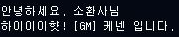
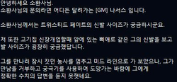
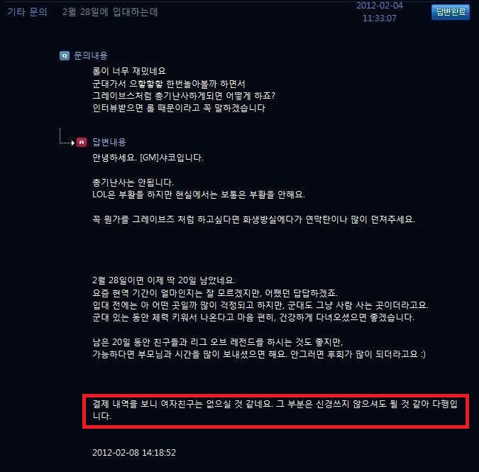

아이디가 GM 또는 Riot에다가 챔피언명을 붙이는데, 해당 챔피언의 특징을 흉내내서 대답한다. 가령, GM 타릭은 게이 같아 보이는 농담을 한다거나, GM 녹턴은 문제가 발견되면 피해망상으로 바로 달려온다는 말을 하고 GM 티모는 녹서스가 밴들 시티를 칠것 같다는 컨셉의 문의를 보내오자 GM 일을 하고 있어 전쟁에 참가하지 못하니 직접 버섯을 깔아달라는 식.

GM케넨. 돌진 시 소리를 낸다.

GM나서스. 유저를 위해 농사까지 포기하면서 미드로 간다. 운영자들 중 가장 센스있는 답변으로 유명하다.

GM샤코. 맨탈갱킹